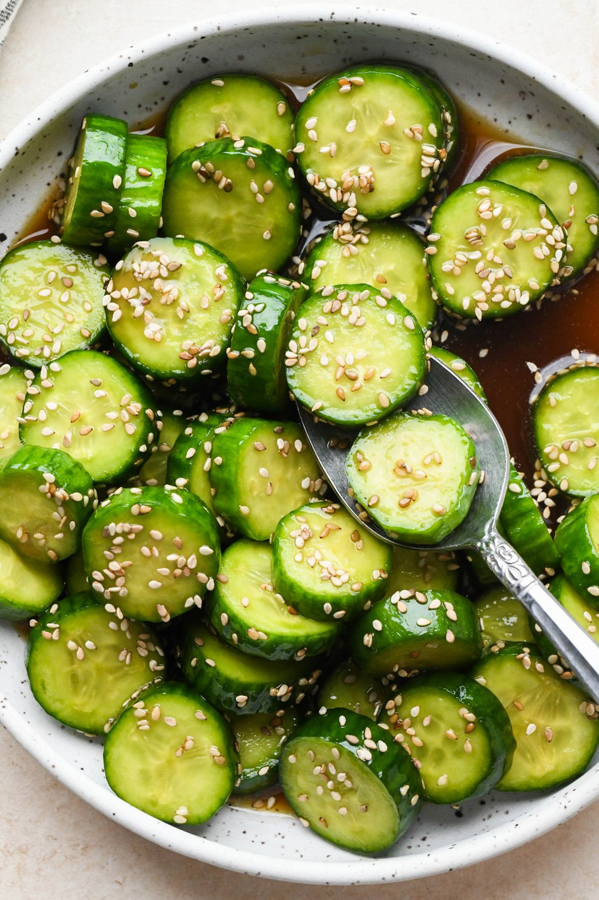

Home
Cucumber Salad

Description
This copycat Din Tai Fung cucumber salad is fresh and simple with a sesame chili soy vinaigrette. Sprinkle with crushed chile flakes just before serving if you like more heat.
Ingredients
- 1 (1 1/4 pound) English cucumber, sliced into 1/2-inch rounds
- 1 teaspoon kosher salt
- 2 tablespoons soy sauce
- 2 tablespoons rice vinegar
- 2 cloves garlic, minced
- 1 1/2 teaspoons sugar
- 1 1/2 teaspoons toasted sesame oil
- 1 1/2 teaspoons chili oil
Steps
- Place cucumbers in a large bowl. Sprinkle with salt and let stand for 30 minutes.
- Rinse cucumbers with water to remove salt, and pat dry with paper towels.
- In a separate bowl whisk soy sauce, vinegar, garlic, sugar, sesame oil, and chili oil until smooth.
- Add cucumber slices to the oil mixture; stir to combine. Let stand for 10 minutes. Serve immediately.